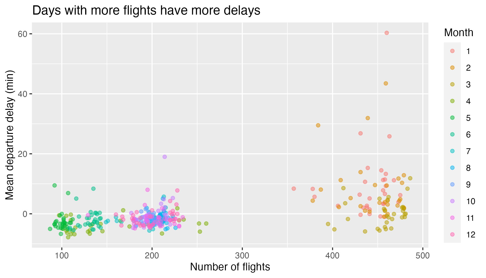

Lab 2: Flights
Part I: Understanding the Context of the Data
For the questions on the handout, consult the image of the data frame found in the slides linked above.
Part II: Computing on the Data
The data for this lab can be found in the flights data frame in the stat20data package. Run ?flights at the console to learn more about the columns. Where applicable, answer each question with one pipeline, which may include dplyr code, ggplot2 code or both.
Question 1
How many flights in the dataset left in the springtime and were destined for Portland, Oregon?
Question 2
Arrange the data set to find out: which flight holds the record for longest departure delay (in hrs) and what was its destination? What was the destination and delay time (in hrs) for the flight that was least delayed, i.e. that left the most ahead of schedule? This can be done in two separate pipelines.
Question 3
I attempted to find some summary statistics on the arrival delay of flights, grouped by their airline carrier. You can find the mininmum and maximum of numerical variables using the min() and max() function, respectively. This is the code that I ran.
However, I received an error and the code would not run. Explain the origin of this error, then modify/correct the code and run it to display the output I was hoping to achieve.
Question 4
Using the airport nearest your hometown, which day of the week and which airline seems best for flying there from San Francisco? If you’re from near SFO or OAK or from abroad, use Chicago as your hometown. Be clear on how you’re defining best. Feel free to mutate a column(s) to your dataset which might be your preferred way to determine best.
There is no explicit weekday column in this data set, but there is sufficient information to piece it together. The following line of code can be added to your pipeline to create that new column. Note also that it uses functions which are contained in the lubridate package.
mutate(day_of_week =
wday(ymd(paste(year, month, day, set = "-")),
label = T))Question 5
The plot below shows the relationship between the number of flights going out of SFO and the average departure delay. It illustrates the hypothesis that more flights on a given day would lead to a more congested airport which would lead to greater delays on average. Each point represents single day in 2020; there are 366 of them on the plot. Form a single dplyr and ggplot2 chain that will create this plot, starting with the original data set. Hint: What does each point on the plot represent? Is it the same as the unit of observation of the initial dataset?

Question 6
Create a histogram showing the distribution of departure delays for all flights. You must follow the steps below:
Set the limits of the x-axis to focus on where most of the data lie.
Outline the bars of your histogram with one color.
Add a text annotation somewhere on the plot that explains the meaning of a negative departure delay.
Finally, title your plot with a claim about the shape and modality of the distribution.
Question 7
Create a plot to examine the relationship between average speed and distance (you will have to make the average speed column first) in one pipeline, labeling your x and y axes. Save this plot into an object and print it to the screen.
Question 8
Rewrite the code for the plot you made in Question 7, coloring the points by destination, and use this to provide a possible explanation for the relationship between the two variables (particularly, the noticeable gap) in the plot title.
Question 9
First, calculate the correlation coefficient between average speed and distance.
-
Then, mutate two new variables onto the data frame:
- (natural) log of average speed
- (natural) log of distance
Visualize the new variables and title your plot with a claim based on what you see.
Finally, calculate the correlation coefficient between log of average speed and log of distance.
The process of applying functions to existing variables (such as logarithm or squaring) in a dataset is often called transforming one’s data.
Question 10
Explain which pair of variables have a relationship which is better described via a linear model:
- distance and average speed
- log distance and log average speed
Explain in one or two sentences, using your results from Question 7 and Question 9 as support.
Question 11
Fit a linear model to the variables you chose from Question 10. Then determine which flight had the fastest average speed given its distance traveled.
Question 12
Fit a multiple linear regression model that explains arrival delay using departure delay and the distance of the flight and print out the coefficients (the intercept and two slopes).
Question 13
On average, which carrier’s flights had the smallest arrival delay given their departure delay and distance?
Question 14
Can we compare the coefficients for departure delay and distance to understand which has the stronger relationship? Why or why not? State your answer in 2-3 sentences.